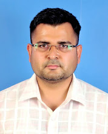
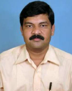
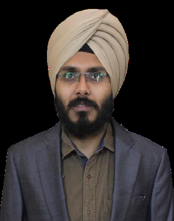

Guest Editors

Dr. Krishan Kumar
[IEEE (SM), IET (M), ACM(M), IUPRAI(LM), IETE(LM), ISTE(LM)]
Assistant Professor, Department of Computer Science & Engineering,
National Institute of Technology Uttarakhand, Srinagar, Pauri Garhwal, Uttarakhand, India-246174,
Email: kkberwal@nituk.ac.in
Dr. Krishan Kumar received Ph. D. and M. Tech. degree in Computer Science and Engineering (CSE), from Visvesvaraya National Institute of Technology Nagpur,
Maharashtra, India, in March 2019 and June 2014 respectively, and received a B. Tech. degree in CSE, from Ch. Devi Lal Memorial Government Engineering College
, Panniwala Mota, Haryana, India in May 2011. Dr. Kumar is currently working as an Assistant Professor (w.e.f. 10th July 2014) and Head (w.e.f. 14th March
2019) in the department of CSE, National Institute of Technology Uttarakhand, Srinagar Garhwal, Uttarakhand, India. Dr. Kumar is discharging the
responsibilities of Coordinator PTP. He was also a member or coordinator of various Institute level committees including the Institute Purchase
Committee, Institute Library Committee, Senate, Advisory Committee on Faculty Recruitment, Campus Wide Networking, CCTV Surveillance, etc.
Currently, Dr. Kumar is working on a DST-sponsored project titled "Secret Sharing Scheme Based Technology for Multimedia Security over Cloud."
He supervised 06 M. Tech. scholars and leading 04 Ph. D. scholars and 01 M. Tech. scholar.
He authored or coauthored more than 75 technical research articles in reputed international conferences and journals, including IEEE and ACM Transactions.
His research article was selected for the best student paper award in the IAPR endorsed International conference PReMI, ISI Kolkata, India, in December 2017.
He was elevated toSenior Member of IEEE USA in April 2020. Dr. Kumar was appointed as an Editor at the IETE Journal of Research (SCI, IF: 2.333) in March 2021.
His research interests include machine learning, deep learning, video processing, multimedia analysis,and Cloud Security

Dr. Maheshkumar H. Kolekar
[IEEE (SM), ACM(M)]
Associate Professor, Department of Electrical Engineering, Indian Institute of Technology Patna
Kanpa Road, Bihta, Bihar-801106, India. Email: mahesh@iitp.ac.in
Dr. Maheshkumar H. Kolekar is working as Associate Professor in Dept of Electrical Engg at Indian Institute of Technology Patna, India, where he is holding post of Associate Professor. He received the Ph.D. degree in Electronics and Electrical Communication Engg from the IIT Kharagpur in 2007. From 2008 to 2009, he was a Post-
Doctoral Research Fellow with the Department of Computer Science, University of Missouri, Columbia, USA where he worked on intelligent video surveillance systems. During May to July 2017, he worked as DAAD fellow in Technical University Berlin where he worked on EEG signal analysis using machine learning and deep learning. He has authored a book titled, Intelligent Video Surveillance Systems: An Algorithmic Approach , CRC Press, Taylor and Francis Group, (2018). He served as a Head, Dept of Electrical Engg, IIT Patna in 2013 for one year and Head of the Center (HoC) for Advanced Systems Engineering, IIT Patna during 2014 to 2016 for two years. He served as Professor-in-charge, National Knowledge Network of IIT Patna during August 2017 to Sept 2019. He has successfully completed R and D project sponsored by Principal Scientific Advisor to Govt of India on abnormal human activity recognition.

Dr. Navjot Singh
[IEEE (SM), ACM(M)]
Assistant Professor, Department of Information Technology, Indian Institute of Information Technology
Allahabad, Devghat, Prayagraj, Uttar Pradesh-211015, India Email: navjot@iiita.ac.in
Dr. Navjot Singh completed his Ph.D. in Computer Science from School of Computer and Systems Sciences, Jawaharlal Nehru University, New Delhi. Presently he is holding the position of Assistant Professor in the Department of Information Technology at Indian Institute of Information Technology Allahabad. He has a teaching experience of more than 7 years. He has published 20 SCI papers in reputed journals like Pattern Recognition, Digital Signal Processing, Applied Intelligence, Soft Computing, Multimedia Tools and Applications, Multimedia Systems, Knowledge and Information Systems, and Signal, Image and Video Processing. He is currently handling 3 sponsored projects from DST in the fields of Visual Cryptography, Biomedical Image Analysis and Intelligent Transportation Systems. His areas of specialization include Image Processing, Computer Vision, Pattern Recognition, Machine Learning, Visual Saliency, Object Detection, Biomedical Image Analysis and Intelligent Transportation Systems.
Dr. Dilip K. Prasad
[IEEE (SM), ACM(M)]
Associate professor at Department of Computer Science, UiT The Arctic University of Norway
Hansine Hansens Veg 18, Tromso 9019, Norway. Email: dilip.prasad@uit.no
Dilip K. Prasad is an associate professor at Department of Computer Science, UiT The Arctic University of Norway. He received the Ph.D. from Nanyang Technological University, Singapore in 2013 and B.Tech. degree in Computer Science and Engineering from Indian Institute of Technology (Indian School of Mines), Dhanbad, India in 2003. He was a senior research fellow at Nanyang Technological University, Singapore from 2015-2019 and research Fellow at National University of Singapore from 2012-2015. Prior to Ph.D, he has worked for 5 years with IBM, Infosys, Mediatek and Philips. He was a Kauffman Global Scholarship fellow in 2011, during which he received training in entrepreneurship at Harvard University, Massachusetts Institute of Technology, Stanford University and Kauffman Foundation. He was selected for 'Rolls-Royce Inventor Award' in 2016. He has received several research grants as PI and Co-PI from European Union, Research Council Norway, UiT The Arctic University of Norway and Ministry of Education, Singapore. He is a founding member of Bio-AI Research group at UiT The Arctic University of Norway. His research projects are aimed towards developing new artificial intelligence models that perform intelligence tasks in complex dynamic environments of diverse kinds, ranging from biological cells to autonomous navigation. He has also worked with scientists of several diverse disciplines, including from life sciences, psychiatry, optics and photonics, thermodynamics, computational photography, maritime navigation, etc. He has published 100+ internationally peer-reviewed research articles and patents, including in the leading publication avenues of computer science and artificial intelligence, such as Nature Machine Intelligence, IEEE Transactions, Pattern Recognition, CVPR, ECCV, etc. His research interests include image processing, pattern recognition, computer vision and artificial intelligence.